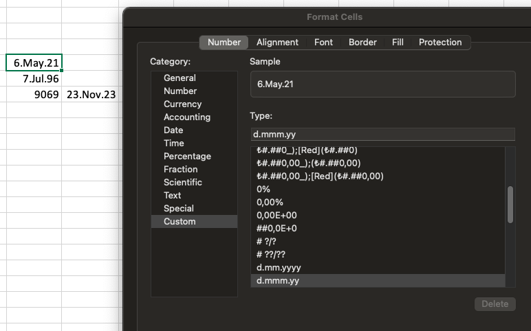
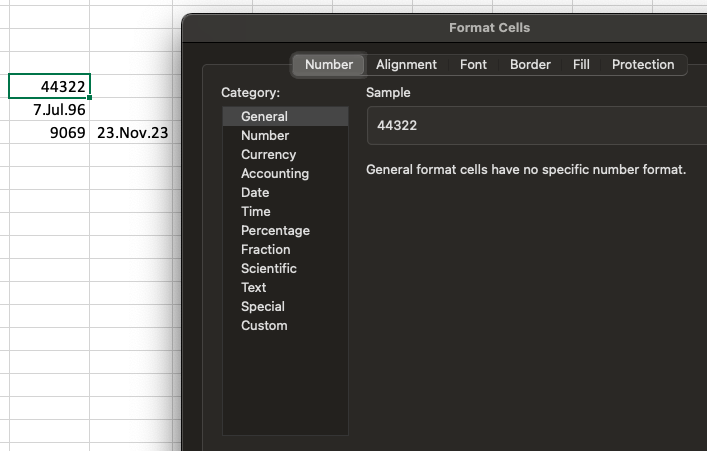
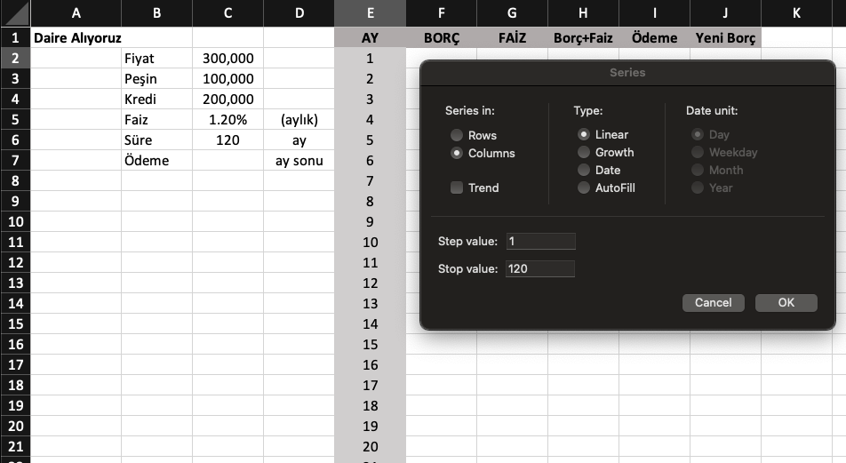
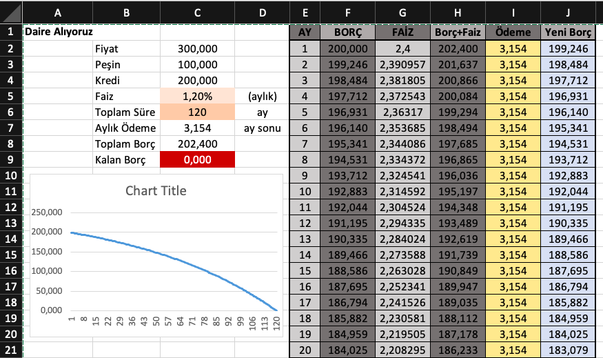
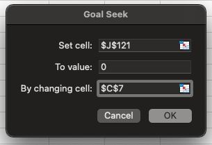
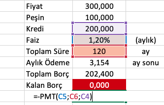
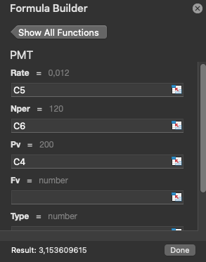

Excel
Excel'in evrensel kullanım dili İngilizce'dir. Formülleri yazdığınız dilden farklı bir dil kullanan Excel'de o dosyayı açarsanız yazdığınız formüller çalışmayacaktır!!
Hücreler
- Excel'de hücrelere yalnızca üç tipte veri girebiliriz:
- Text(Yazı)
- Number(Sayı)
- Formula(Formül)
Ayrıca Formül'ün bir üst versiyonu;'function(fonksiyon)'lar da kullanıbilir.
Excel = operatörünü gördüğünü anda aritmetik işlem yapmaya başlar.
Image'ler hücrenin içerisine koyulamazlar sadece dosyanın üzerine yapıştırılırlar.
CMD ya da CTRL + yön tuşları ile matriksin içerisinde hızlı navigasyon yapılabilir. Scroll ederek yön bulmak kullanışsızdır.
Seçim yapmak için ise 'CMD, CTRL + Shift + Arrows' yaparız.
Aritmetik işlemleri her zaman hücre referansı vererek yapmalıyız. Çünkü hücrelerin içerisindeki veriler her zaman değiştirilebilirler.

Yukarıda hücrenin sağ altında görünen mavi noktaya basılı tutatarak sağdaki hücrelere doğru sürüklediğimizde o hücredeki işlem sağdaki hücrelere de kopyalanmış olur. Fakat kendi üstlerinde hücreler için işlem yaparlar. Bu özellik Excel'in bel kemiğidir.
Hücrelerde tanımlanmış veri formatları vardır. Yapılacak işe göre hangi tipte verinin hücrede tutulacağını temsil eder. Genelde varsayılan olarak General ya da Number tanımlı gelir. Formatlara dikkat edilmezse hatalı veri üretilebilir. Örneğin Date formatındayken KDV hesabı yapmaya kalkışırsak alakasız bir veri üretilir. Bunu seçmek için hücreye sağ tıklayarak Format Cells sekmesine ulaşılır.

Hücrelerin direkt kendilerini üzerine basılı tutarak sürüklediğimizde taşıyabiliriz. Taşınacak olan hücre içerisinde formül, veri vs. ile taşındığı konuma yerleştirilir.

Yukarıdaki görselde görülen formülü onun altındaki ve sağındaki hücreler için yapmak istediğimizde sadece sürükle bırak yöntemi yeterli değildir. Çünkü görüldüğü üzere KDV oranı bilgisi sadece tek bir hücrede yer almakta. Dolayısıyla diğer hücreler içinde bizim bu veriyi sadece o hücreden yani tek bir hücreden almamız gerekiyor. Bunun çözümünü aşağıdaki görselden inceleyebilirsiz:

Görüldüğü üzere kesik kesik işaretlenmiş olan hücreler o hücre için işlem yapılmakta olan hücreleri işaret etmekte. Yani seçilen en son hücre de KDV oranını aynı hücreden alıyor. Bunu sağlamak için $ işareti ile sütun ve satırı çıpaladık. Eğer $H31 şeklinde yazmımş olsaydık sadece sütunu çıpalamış olurduk. Fakat $H$31 şeklinde yazarak hem sütunu hem de satırı çıpalamış olduk. Bu işleme hücreyi absolute - sabitlemek denir.
Böylece yukarıda yaptığımız işlemle formül oluşturmuş olduk.Grafikler(Charts)

Yukarıda Nike'ın çeyreklik sezon satışları yazılı. Bu rakamlara göre bir grafik çıktısı alarak gidişatın nereye doğru olduğunu gözlemlemek mümkün oluyor. Yani grafiklerin rakamları okumayı kolaylaştımak gibi bir avantajları var.
Excel bu grafiği oluşturmak için ilgili hücrelerin tamamı seçilir ve insert menüsünden istenilen tarzdaki grafiğe tıklanır. Bunun sonucunda dosyaya taşınabilir bir grafik getirilir.
Tabiki bu grafikleri üzerlerine bazı matematiksel formülleri ekleyerek daha detaylı hale getirebiliyoruz. Örneğin doğrunun denklemini ve r karesini ekranda gösterebiliriz. Bunu grafikteki çizgilere sağ tıklayıp 'add trendline' seçeneğinden 'Display Equation on char' ve 'Display R-squared value on chart' seçenekleri işaretleyerek yapabiliriz. Bunu yaptığımız takdirde aşağıdaki sonuca ulaşırız:
Aşağıda görüldüğü gibi grafiğin sağ üstünde yukarıda istediğimiz verilere ulaşmış olduk. Formül bile şu bilgiyi veriyor: Satışlar 3.8 milyar dolardan başlar ve her çeğrekte 0.13 artar. Kısaca bu formül, elimideki veriye en uyumlu olan doğruyu bulmamızı sağladı. Bu bize basitçe grafiğin geleceği hakkında kafadan atarak tahmin etmeye nazaran daha isabetli bir tahmin üretme konusunda yardımcı olacak. Mesela bu grafikteki en son sezon satışına 0.13 eklersek muhtemelen bir sonraki sezonun satış rakamını tutturmuş olacağız. Fakat bu sadece işin matematiği bunun dışında bir çok faktör bulunmakta şirketin yapısı, içinde çaışanlar, yönetenler, dış dünyada olan şeyler bu satışları gayet net etkileyebilir. Mesela Covid-19'un satışları olumsuz etkileceğini bu grafikle öngöremeyiz.

Daha önceden öğrendiğimiz gibi hücrenin sağ altındaki noktadan istenilen yöne doğru çekildiğinde seçili olan hücrelerin üzerindeki işlem seçilen yeni hücreler için de devam eder. Fakat bunu eğer değiştirilmezse varsayılan olarak yalnızca doğrusal regresyonda yapar. Dolayısıyla yukarıdaki grafiktek işlemde uygulanan formül tekrar uygulanarak gelecek sezonların satış tahminleri yapıldı. Fakat sezondan sezona farklılık göstereceğinden mesela sohbahar sezonunda satışlar tahmin edilenin altında olabileceğinden ancak 0.13 ile çarpımın %90 -%95 civarında gerçekleşebileceğini öngörerek daha gerçekçi bir sonuç elde edebiliriz. Örneğin; =(B50+0,13)*0,95.

Aritmetik İşlemler
Toplam(SUM)
=SUM(hücre:hücre) şeklinde yazarak toplama işlemini rahatça yapabiliyoruz. ':' işareti seçilen hücreler dahil aralarında kalanları seçer.
Ayrıca yukarıdaki görselde formülü yazdığımız yerin hemen solunda kalan formül çubuğuna tıklayarak seçili hücredeki formülün nasıl kullanılacağını gösterek bir sekme açılır. Eğer bir formülün veya fonksiyonun nasıl kullanılacağından emin değilsek ya da unuttuysak bu şekilde yardım alabiliriz.

Ortalama(AVERAGE)
=AVERAGE(hücre:hücre)
Fonksiyon kullanmak bize dinamik bir hesaplama yapma imkanı veriyor. Veriler her zaman değişebilir, işlem yaptığımız listeye eklemeler veya çıkarmalar yapılabilir. Fonksiyonlar bu değişikliklerle tek tek uğraşmadan otomatik olarak değişiklik yapıldığı anda sonuca yansımasını sağlarlar.

Hücre, vektör veya matrise isim vermek (naming arrays)
Diyelimki sürekli olarak aynı hücrelerle çalışıyoruz. Bu durumda o hücrelerin kapladığı alanın tamamını seçerek o alana bir isim atayabiliriz. Böylelikle biz ne zaman bu ismi bir fonksiyon ya da formülle anarsak Excel anlarki biz o alan üzerinde işlem yapmak istiyoruz.

Bunu yapabilmek için isimlendirmek istediğimiz hücreleri seçip yukarıdaki görsellerin en üst solunda yazan SUM yazılı olan yere tıklayıp istediğimiz ismi girmemiz yeterlidir.

Listeye koşul ekleme - Conditional Formatting
Programlamada bu işlem genelde if/else blokları ile yapılır. Aslında Excel'de bir kodlama dilidir ve aynı işlem yapılabilir. Fakat burada hücrelerle yani aslında görsel bişeylerle uğraştığımız için sadece biçimlendirmelerle de istediğimizi alabiliriz. Örneğin aşağıdaki görselde notu 65'ten düşük olanları kırmızı ile işaretledik.
Bunu yapmak için listenin tamamını seçiyoruz,Home > 'Conditional Formatting' > 'Highlight Formatting' > 'Less Than' > bu noktada 65 yazılı olan hücreyi seçipi OK'a tıklıyoruz.

Conditional Formatting'in görsellik açısından zenginleştirici özellikleri vardır. Mesela yukarıdaki listeyi aşağıdaki hale getirebiliriz. Bu trafik ışıkları efekti verir, en yüksek yeşil ve en düşük kırmızı renge boyanır. Arada kalanlarda turuncu sarı tonlarında olur. Bunun gibi ya da çok daha farklı bir çok format bulunmakta.

If/else
Yukarıdaki işlemi if/else kullanarak yapıyoruz:

Geçme notunu çapalıyoruz. Seçtiğimiz hücreyi çapaladığımızla karşılaştırıyoruz. Sonuç true ise 'FAIL' false ise 'PASS' yazıyor. Sonuç listesinide Highlight edip Conditional Formatting ile 'FALSE' olanları kırmızıya boyuyoruz.
Format Cells
Matematiksel işlemlerde rakamlardan bahsettiğimizden ve aynı zamanda tarih ve zaman bilgisini de rakamlarla ifade ettiğimizden dolayı her zaman bir başlangıç noktasına ihtiyaç duyuyoruz. Elbette sonsuz diye bir kavram vardır fakat işlem yapabilmek için elbetteki bir noktadan başlamamız ve bir noktada bitirmemiz gerekiyor. Dolayısıyla Excel'i yapan mühendisler Date için 1/1/1900 tarihinin nümerik karşılığını 1 yani başlangıç olarak belirlemişler. Eğer herhangi bir hücreye veri girersek ve o veriyle başka bir veri yani hücre arasında bir işlem yaparsak Excel o verinin tipini otomatik olarak seçer. Yani o hücrenin format cell'ini seçer. Örneğin iki date'i birbirinden çıkartırsak geçen zaman gün cinsinden ortaya çıkartılır yani Number olarak verilir.
Eğer aynı veriyi yani yukarıdaki date verisini Number formatında görmek istersek aşağıdaki gibi bir veri elde ederiz. Bu 1/1/1900'dan o hücrede yazan tarihe kadar geçen gün sayısını bize verdi. Tabi 1900 Excel x = 0 demek yani -'ye doğru da gidilebilir. O da 1900'den öncesini temsil eder.
Daire Al(Örnek)
Bu noktada bir örnek yapacağız. Bu örnekte ilk olarak belli bir hücreye kadar 1'den başlayıp sayıları yazmak istiyoruz. Bunu tek tek elle yazmanın Excel'de bir suç olduğu aşikar. Dolayısıyla kullanacağımız yöntem şu: (Başlangıç hücresini seçerek Home > Fill > Series açılır. Aşağıdaki pencere açılır. Satır ya da sütunlar için mi olduğu seçilir. Hangi adımdan başlanıp kaça kadar gidileceği girilir ve OK'a tıklandığında otamatik olarak istenilen rakamları yazar.)
Daha sonra faizi sabitliyoruz ve her satırda borcun üzerine ekliyoruz. Toplamda faizle birlikte ödememiz gerek tutar borç ve faizlin toplamıdır. Her ay 120 ayda toplam borcu ödeyecek kadar ödeme yapılması gerekiyor. Her ay için güncel borç bilgisi de listede bulunuyor.
Kalan borcu tam olarak 120 ayda ödeyecek şekilde her ay ödenmesi gereken tutarı ayarlamak herhangi bir yöntem kullanmadan her zaman kolay olmayacaktır. Dolayısıyla bu noktada şu adımları izliyoruz: Data > What-if Analysis > Goal Seek
- Set cell = $J$121 (0 değerine ulaşmasını istediğimiz hücre.)
- To value = 0 (Hangi değere ulaşmak istediğimizi giriyoruz.)
- By changing cell = $C$7 (Değiştirmek istediğimiz hücreyi giriyoruz yani bu örnekte aylık ödemeyi değiştirmiş oluyoruz.) Bu noktada Excel tam 0'ı tuturabilmek için arkaplanda bir algoritma çalışıtırıyor. Bu algoritma bizim manuel olarak bulmaya çalışırken yaptığımız ikiye bölme işlemini defalarca(infinity loop) yapa yapa en yakın sayıyı buluyor.
Daha sonra bütün yeni borçları seçerek insert sekmesinden graph'lardan bir tanesini seçerek kalan borcun grafiğini oluşturduk.
Bu arada muhasebede (parantezler) eksi anlamına gelir.
Yukarıda Goal Seek ile yaptığımızın aynısı taibki fonksiyon kullanarakta yapabiliyoruz: PMT(PAYMENT function, formula)
 Yukarıda bankadan aldığımız parayı (-) ile yazmamız gerekiyorki sonuç negatif gelmesin. Ya da yukarıdaki gibi direkt olarak fonksiyonun tamamını da eksi ile hesaplatabiliriz.